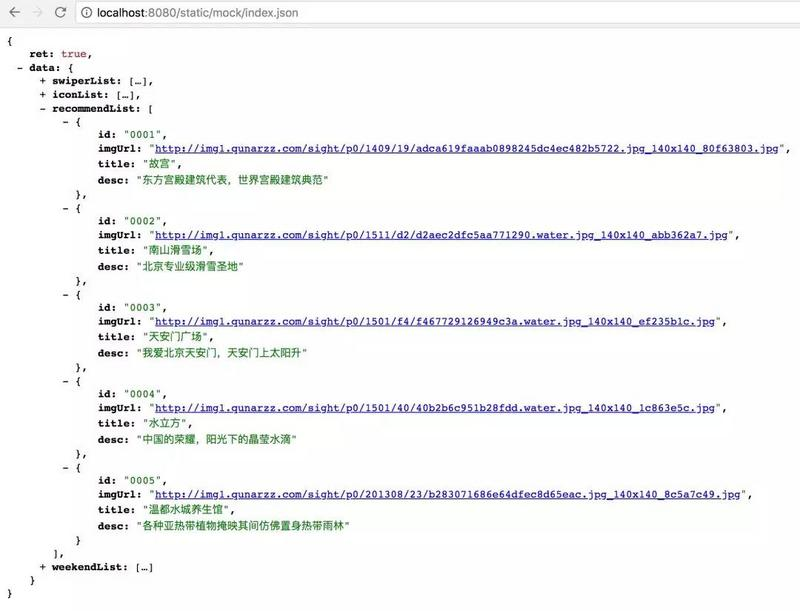

最近我的朋友王小闰进入一家新的公司，正好公司项目采用的是前后端分离架构，技术栈是王小闰非常熟悉的vue全家桶，后端用的是Java语言。
在前后端开发人员碰面之后，协商确定好了前端需要的数据接口（扯那么多，其实也就是关于json数据的字段的定义），然后前后端程序猿就嗨皮地并线开发去了。
前后端联调前夕
我的朋友王小闰他们这家公司做本地旅游项目的，安排到他手上的活儿是该旅游项目的webapp工程。
项目动工伊始，一切都得从头来做。在公司没日没夜的开发了一天之后，王小闰在没有借助vue-cli官方提供的脚手架工具下，徒手从零开始，搭建了一套基于公司特定要求的vue项目的工程架构目录。（关于如何从零开始搭建vue项目的脚手架工程，后面我会单独写一个系列）。
前端项目环境搭建好之后，就正式进入了项目首页的业务编码工作。王小闰又没日没夜的敲了一天代码之后，首页header区域、轮播图以及导航图标的页面布局和逻辑开发都实现了，此时他想调用后端数据测试下流程，但是后端程序猿还没有将该数据的接口开发出来，没办法，我的朋友王小闰此时只能在本地模拟点假数据，逼格高点的说法叫mock数据。
捣鼓半天，首页的mock数据终于弄好了，如下图所示：
什么是前后端接口联调
之前开发写代码的时候，所有的ajax数据都不是后端返回的真实数据，而是我们自己通过接口mock模拟的假数据，当前端的代码编写完毕，后端的接口也已经写好之后，我们就需要把mock数据干掉，尝试使用后端提供的数据，进行前后端的一个调试，这个过程我们就把它称之为前后端的接口联调。
为什么要联调
本地的mock数据是王小闰自己写的，肯定符合前端需求，但是后端接口首先需要测试通不通，还需要测试数据格式对不对，还有后端有没有填写足够的数据，比如写列表页，前端想分页，如果后端就写了两条测试数据，你咋整？
所以，王小闰需要根据后端对接口的调整，不断地来回切换url，这样岂不是还在受后端的影响，还谈什么毛线的前后端分离，名存实亡嘛！
如何实现前后端接口联调
首先，我们已经知道，目前的前后端分离的架构应用分为两种情况：
- 前后端完全分离，前后端分别拥有自己的域名和服务器。
- 前后端开发分离，但是部署时是一个域名和一台服务器。
虽然架构可以采用前后端分离，但是部署有可能就不一样了，这和项目的大小，公司的情况等等都有关系了，一个百八十人用的小系统，还得两台服务器两个域名，你不觉着浪费吗？
两种不同的部署情况直接导致了前期在设计联调方案的时候就不同了。
如果你们公司的项目在部署时是两台服务器对应两个域名，恭喜你，这是最nice的方案，也是联调最舒服的方式。
但是，我朋友王小闰呆的这家公司是一家刚起步的小公司，肯定是怎么节省成本怎么来，问过后端，才知道他们公司是属于第二种情况，也就是开发时前后端分离，部署时是一个域名和一台服务器。知道这个之后，他就明白接下来该怎么操作了。
王小闰之前在项目根目录static文件夹下新建了一个mock文件夹，里面写了一些json文件，当我们做联调的时候，这些mock数据就没用了，我们要把mock数据切换成后端提供给我们的真实的数据。
当我的朋友王小闰把static文件夹下的mock数据删除之后，在运行项目，发现报错了，浏览器告诉他，你访问的mock下面的index.json文件找不到404。
我们平时本地前端开发环境dev地址大多是 localhost:8080，而后台服务器的访问地址就有很多种情况了，比如 后端程序猿本地IP（127.0.0.1:8889），或者外网域名，当前端与后台进行数据交互时，自然就出现跨域问题（后台服务没做处理情况下）。axios不支持jsonp, 所以我们就要使用http-proxy-middleware中间件做代理。
现在通过在前端修改 vue-cli 的配置可解决：
vue-cli中的 config/index.js 下配置 dev选项的 {proxyTable}:
如果你想在公司的vue项目中实现前后端联调，不需要再使用类似于fiddler charles的抓包代理工具了，你只需要使用proxyTable这个配置项，把你需要请求的后端的服务器地址写在target值里就OK了。
解决完跨域问题后，接下来王小闰该想想怎么在一台服务器一个域名下进行联调的问题了。比较常见的做法是前端在本地修改，本地查看，测试好了以后上传到服务器，看看线上环境可不可以，OK的话一切都好；不行就本地接着改，然后在上传。
联调完之后，如何将前端打包的项目文件发给后端，这里也需要注意两点：
（1）css、js和图片等静态文件
这时候的静态文件在开发阶段不需要任何考虑，按照你喜欢的相对路径或者相对于项目的根路径的形式写就行了，因为早晚还得交给后端。但是，需要注意：
如果你采用 相对项目根路径的书写方式来写你的静态文件路径 时，一定要先和后端商量好，将来项目部署的时候他会把你的前端整个项目放在哪里？如果不是根目录下，你就挂了。比如：你的reset.css的路径是 /exports/styles/common/reset.css ，后端把你前端项目放在了根目录下的 frontEnd 文件夹下， reset.css 文件就报404了。
如果后端采用的java，你需要特别注意的是， tomcat的根目录 并不是 webapps 文件，而后端项目默认是部署在 webapps/ROOT 文件下的，所以你如果使用了相对项目根路径的书写方式来写你的静态文件路径时，对不起又是404了。
（2）ajax后端数据
因为现在唯一的一台服务器还是在后端程序猿那里，所以此时你还是可以写绝对路径（域名+请求路径），利用hosts文件来改变域名映射实现联调。
闰土有话说
看这篇文章的童鞋，不管你是在大公司还是在小公司，都需要知道，并不是说你将dist文件打包发给后端就完事了，就不需要了解leader后面操作的点击部署、合并分支的事儿了。
基础命令、拉取分支、构建编译包、copy生产包到服务器、备份资料、启动脚本、灰度发布、等等流程其实都是很有必要了解的。
要不然最开始没有这些基础设施、基础组件，谁来搭建+运行呢，毕竟还是需要第一批吃螃蟹的人。
即使大公司，也有小团队的，有的小团队不一定遵循大公司那一套自动化部署教程，也有自己玩自己的轮子+工具。
就算是大公司， 如果基础架构组的工具做好了，但是没有总监以上的大佬面向公司推广， 这些基础设施不一定能面向公司内部使用。
基础设施、基础组件能够面向公司内部大量使用，离不开公司高层领导的支撑、当然也有基础设施团队的辛苦开发、还需要有使用基础组件的机遇和业务场景。
总结：就像我之前文章里讲过的，当你处在前后端分离的大浪潮下，做前端的要将眼光放在整个项目上，统筹全局，不要偏安一隅，待在前端的小角落里独自玩耍。一句话，格局要放大，步子要迈开，然后才是低头前行。
更多文章我会第一时间更新在公众号<闰土大叔>里面，欢迎关注~

评论
默认排序
时间排序